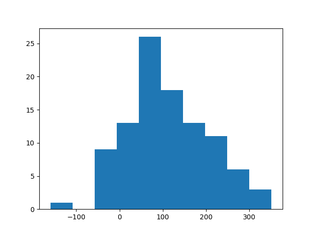

Note
Go to the end to download the full example code
Example 3#
test
import numpy as np
import sys
from mytoolbox.submodule.module2 import my_histo
x = np.random.normal(100, 100, 100)
my_histo(x)
Total running time of the script: ( 0 minutes 0.061 seconds)